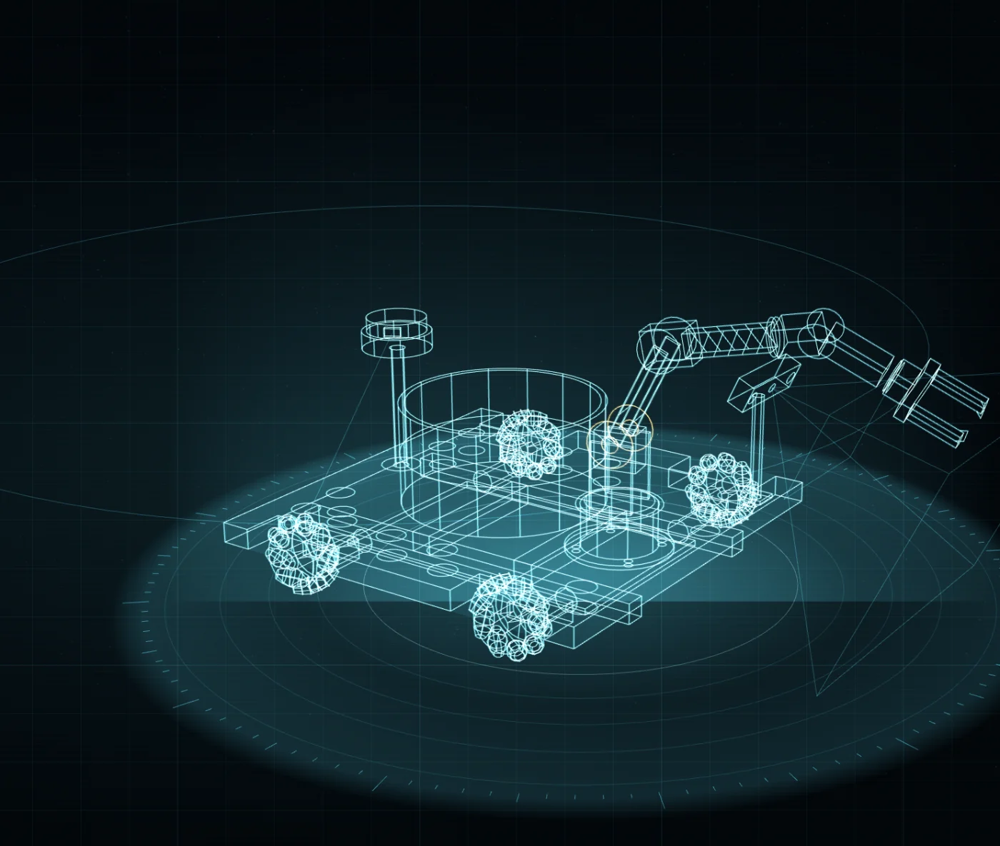

HOLO BENCH // PROJECTION 01
MODEL: AUTO-TRASH NAVIGATOR
MODEL: AUTO-TRASH NAVIGATOR
--:--:-- JST
SIG --%
SIG --%
YAW ---.- °
SCALE -.-- ×
SCALE -.-- ×
CHASSIS 400 × 400 mm
ARM 6-DOF // WHEEL Ø80 ×4
ARM 6-DOF // WHEEL Ø80 ×4
エンジニアリングの進め方
「技術の先にある思想を見据え、
未来に希望を与えるロボットを根気強く形にする」
01 / MECHANICAL
設計する
Fusion 360 で6軸アーム・グリッパー・車体を起こし、3Dプリンタとレーザーカッターで製作する。公差と組み付けまで含めて形にする。
02 / CONTROL
動かす
ROS 2、ros2_control、MoveIt 2、Nav2。PID と軌道計画、深度・画像による認識を組み合わせて、1台の上で統合する。
03 / VERIFICATION
確かめる
ログではなく真値で判定する。回収数・投下誤差・巡回継続数など、合格条件をすべて計測可能な数値で定義して測る。
03PROJECTS
02AWARDS
04MISSION LOGS
6AXIS ARM

FEATURED BUILD // ATN-01
具臣床のゴミを自律で見つけて拾う移動ロボット
移動（ナビゲーション）・認識（画像/深度）・マニピュレーション（アーム制御）という独立した分野を、1台の上で統合することを目的に開発。実機を作る前にシミュレーション上で完成させる方針で進めています。
CHASSIS
400 × 400 mm
ARM REACH
0.45 m
COLLECTED
3 / 3
UPTIME
20 min / 0 err
01Mission Modules
DOCKING PORTS // SELECT A MODULE